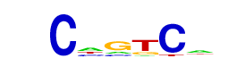

| p-value: | 1e-54 |
| log p-value: | -1.253e+02 |
| Information Content per bp: | 1.584 |
| Number of Target Sequences with motif | 465.0 |
| Percentage of Target Sequences with motif | 26.59% |
| Number of Background Sequences with motif | 5642.9 |
| Percentage of Background Sequences with motif | 12.40% |
| Average Position of motif in Targets | 52.4 +/- 18.2bp |
| Average Position of motif in Background | 50.2 +/- 36.7bp |
| Strand Bias (log2 ratio + to - strand density) | 10.0 |
| Multiplicity (# of sites on avg that occur together) | 1.08 |
| Motif File: | file (matrix) reverse opposite |
| Rank | Match Score | Redundant Motif | P-value | log P-value | % of Targets | % of Background | Motif file |
| 1 | 0.915 | 1e-46 | -105.963118 | 22.01% | 10.02% | motif file (matrix) | |
| 2 | 0.852 | 1e-44 | -101.478179 | 11.44% | 3.49% | motif file (matrix) | |
| 3 | 0.958 | 1e-42 | -96.792604 | 22.30% | 10.66% | motif file (matrix) | |
| 4 | 0.920 | 1e-38 | -88.006351 | 23.50% | 12.00% | motif file (matrix) | |
| 5 | 0.742 | 1e-26 | -60.530985 | 2.40% | 0.21% | motif file (matrix) | |
| 6 | 0.686 |  | 1e-18 | -43.709087 | 23.90% | 15.42% | motif file (matrix) |
| 7 | 0.604 | 1e-13 | -31.670058 | 9.15% | 4.71% | motif file (matrix) | |
| 8 | 0.633 | 1e-9 | -22.579047 | 0.57% | 0.02% | motif file (matrix) | |
| 9 | 0.620 | 1e-8 | -19.402824 | 7.38% | 4.23% | motif file (matrix) | |
| 10 | 0.626 | 1e-5 | -13.800113 | 3.77% | 1.95% | motif file (matrix) |